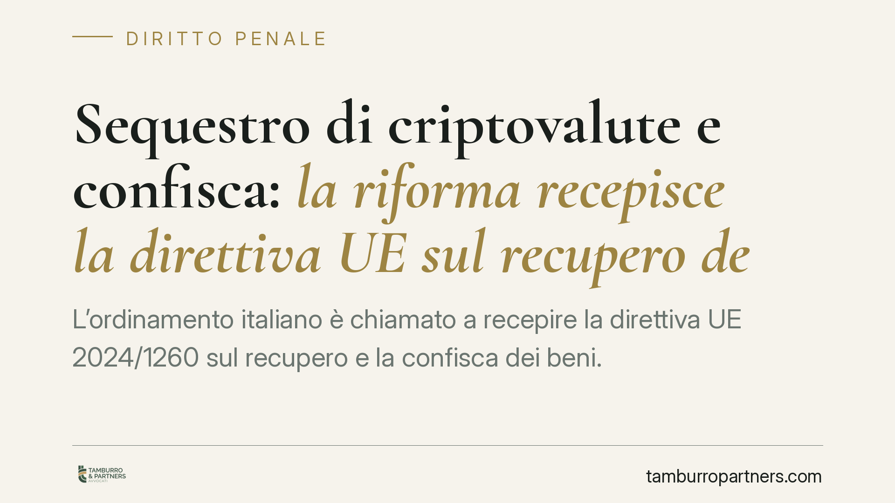

Sequestro di criptovalute e confisca: la riforma recepisce la direttiva UE sul recupero dei beni
L'ordinamento italiano è chiamato a recepire la direttiva UE 2024/1260 sul recupero e la confisca dei beni. Lo schema di decreto attuativo rafforza i poteri investigativi della procura e introduce regole specifiche per il sequestro delle criptovalute. Cambiano, in prospettiva, le strategie difensive per indagati, exchange e operatori del risparmio. Un quadro ancora in via di definizione, da seguire con attenzione.

Il contesto normativo
La direttiva UE 2024/1260, in materia di recupero e confisca dei beni, è stata approvata per armonizzare gli strumenti di aggressione patrimoniale dei proventi illeciti nei Paesi membri. Tra gli obiettivi dichiarati vi sono il rafforzamento della cooperazione tra autorità, la gestione efficiente dei beni sequestrati e l'adeguamento della disciplina alle nuove forme di ricchezza, incluse le cripto-attività.
Il recepimento interno è affidato a un decreto legislativo attuativo, il cui testo è in via di definizione. Per questa ragione evitiamo riferimenti perentori a numerazioni di articoli e date di entrata in vigore non ancora confermati dalla pubblicazione in Gazzetta Ufficiale. L'indicazione corretta, allo stato, è che la riforma interverrà sugli strumenti cautelari reali e sulla confisca, in coerenza con gli obblighi europei.
La confisca per equivalente: cosa significa davvero
È utile chiarire un istituto spesso frainteso. La confisca per equivalente (o "di valore") non colpisce il bene direttamente collegato al reato, bensì beni di valore corrispondente al profitto o al prezzo dell'illecito, quando quel profitto non è più materialmente rintracciabile.
Due precisazioni tecniche sono essenziali. Primo: la misura non si estende a "qualsiasi cespite" riconducibile al soggetto, ma opera nei limiti della disponibilità del reo e fino alla concorrenza del valore del profitto o prezzo del reato. Secondo: nel nostro ordinamento questo strumento trova fondamento in norme diverse — tra cui l'art. 240-bis del codice penale per la confisca allargata e numerose disposizioni di settore — e non in un'unica previsione del codice di procedura penale. La riforma incide su questo sistema, non lo sostituisce con un singolo articolo.
Il nodo delle criptovalute
Il sequestro di cripto-attività pone problemi tecnici peculiari. Il valore è volatile, la titolarità non è sempre immediatamente accertabile e l'apprensione materiale richiede l'accesso alle chiavi private o la cooperazione dell'exchange che custodisce i fondi.
La giurisprudenza di legittimità ha già affrontato la questione, qualificando le criptovalute come beni suscettibili di sequestro preventivo e valorizzando le tecniche di *blockchain analysis* per ricostruire i flussi. La riforma dovrebbe consolidare questo orientamento, definendo modalità operative per l'apprensione e la custodia, anche attraverso la conversione in valuta avente corso legale per neutralizzare le oscillazioni di valore.
Chi è coinvolto
Gli effetti non sono uniformi.
Per l'indagato cambia il perimetro del rischio patrimoniale: cresce la probabilità che il sequestro raggiunga wallet personali e beni di valore equivalente.
Per gli exchange e i prestatori di servizi su cripto-attività aumentano gli obblighi di cooperazione con l'autorità giudiziaria e la necessità di procedure interne per dare esecuzione ai provvedimenti in tempi rapidi.
Per i professionisti del risparmio e della consulenza diventa centrale la tracciabilità documentale della provenienza dei fondi, a tutela propria e del cliente.
Il rafforzamento dei poteri investigativi
La direttiva spinge verso indagini patrimoniali più incisive e un coordinamento rafforzato, anche nell'ambito dell'attività del Procuratore nazionale antimafia e antiterrorismo. La direzione è quella di anticipare l'aggressione ai patrimoni illeciti e di migliorare lo scambio informativo transfrontaliero. Resta fermo il controllo giurisdizionale: ogni misura cautelare reale è soggetta a verifica del giudice e agli strumenti di impugnazione previsti dall'ordinamento.
Cosa fare in concreto
- Documentate la provenienza dei fondi e delle cripto-attività: conservate ordini di acquisto, estratti e cronologia delle transazioni, elementi decisivi per contestare un sequestro.
- Verificate l'accessibilità dei wallet: mappate chiavi, custodi e piattaforme utilizzate, così da ricostruire con precisione la titolarità effettiva.
- Attivate tempestivamente il riesame: i termini per impugnare i provvedimenti cautelari reali sono brevi e perentori.
- Quantificate con rigore il valore: nella confisca per equivalente la corretta stima del profitto delimita l'ammontare aggredibile.
- Valutate una consulenza tecnica di *blockchain analysis*: una CTU di parte può contrastare le ricostruzioni dell'accusa sui flussi.
Conclusione
La riforma segna un cambio di passo nell'aggressione patrimoniale dei proventi illeciti, con un'attenzione nuova agli asset digitali. Molti profili applicativi dipenderanno dal testo definitivo del decreto. Consigliamo di monitorare la pubblicazione ufficiale e di impostare per tempo la gestione documentale delle cripto-attività.
---
*Contributo informativo a cura di Tamburro & Partners - Avv. Giuseppe Tamburro. Non costituisce parere legale.*
Ogni condominio ha una storia a sé.
Se gestisci un'amministrazione e vuoi un confronto su una specifica questione condominiale, scrivi allo studio. Ti rispondiamo entro un giorno lavorativo.